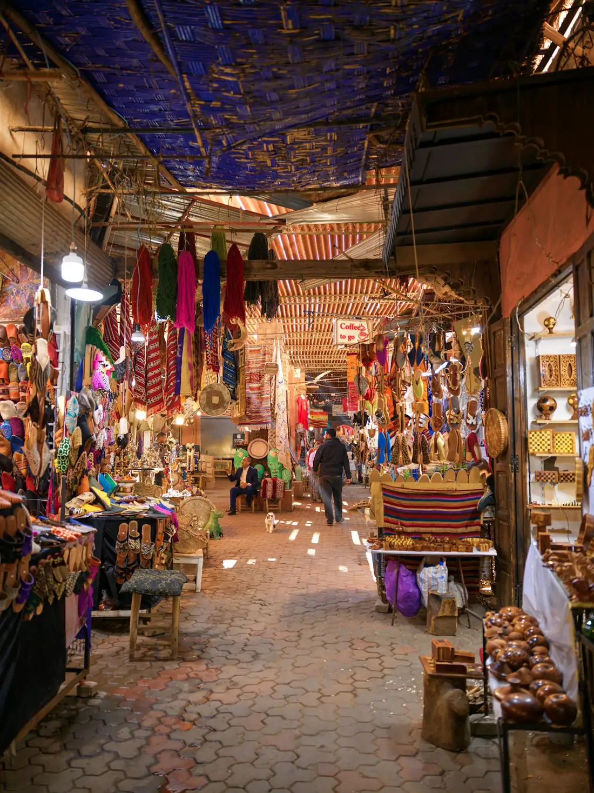

MARRAKECH · A STARTING POINT, NOT A RIGID ITINERARY
CHOOSE YOUR BASE
Start with how you want your stay to feel.
A neighborhood is a useful first filter. The actual street, room and access arrangements matter just as much.
01 / MEDINA
For a stay in the old city
Consider a riad if you’re drawn to courtyard architecture and the medina setting.
Ask before booking
How far is the walk from the nearest vehicle drop-off? Can someone meet you? What do recent guests say about noise and stairs?
02 / GUÉLIZ
For a modern-city base
Consider Guéliz if you prefer a setting of modern avenues and facilities.
Ask before booking
Which places are realistically walkable from this address? What are your transport options for returning in the evening?
03 / HIVERNAGE
For a hotel-focused stay
Consider Hivernage when comparing hotels and the facilities you want to spend time using.
Ask before booking
Are the pool, breakfast and other facilities included? Is there ongoing work nearby? What transport will you need?
Neighborhood context: Moroccan National Tourism Office. These are preference-based starting points, not safety ratings or property recommendations.
A FLEXIBLE FIRST 48 HOURS
Less rushing. More noticing.
This suggested rhythm leaves room for travel delays, heat, a slow lunch or simply getting pleasantly distracted. Adjust it to your arrival time and mobility.

DAY 1 / ARRIVE & SETTLE
Make the first journey simple.
Save your accommodation’s written directions and contact number. Agree where your driver can stop and how you’ll cover the final part of the journey with luggage.
DAY 1 / A SMALL FIRST WALK
Learn your way back.
Choose a short outing near your stay. Save your starting point offline, note a recognizable landmark and ask your host about the return route. Keep your first evening flexible.
DAY 2 / ONE PLANNED HIGHLIGHT
Give the morning a focus.
If Jardin Majorelle is on your list, check the official website for current tickets and entry arrangements. Plan around the confirmed slot instead of an old itinerary online.
Make time for the medina, a meal or a quieter break. If you want a guide, agree on the route, duration, language and shopping stops before setting off.
Ask for the exact drop-off point, walking distance, steps and luggage assistance. A map pin alone may not explain how to reach the entrance.
What does the final room price include?
Request the full total for your dates and guest count. Check breakfast, local taxes, deposits, cancellation rules and payment currency directly.
Does this room suit my needs?
Ask about stairs, lift access, bathroom layout, air conditioning and street or courtyard noise. Confirm specific accessibility requirements in writing.
Is this the official ticket seller?
Start at the attraction’s official website and follow its ticket link. Check the date, time and refund conditions before paying.
What is the evening plan?
Ask your host about a suitable route and transport for the time you’ll return. Consult current government travel advice rather than treating any neighborhood as universally safe.